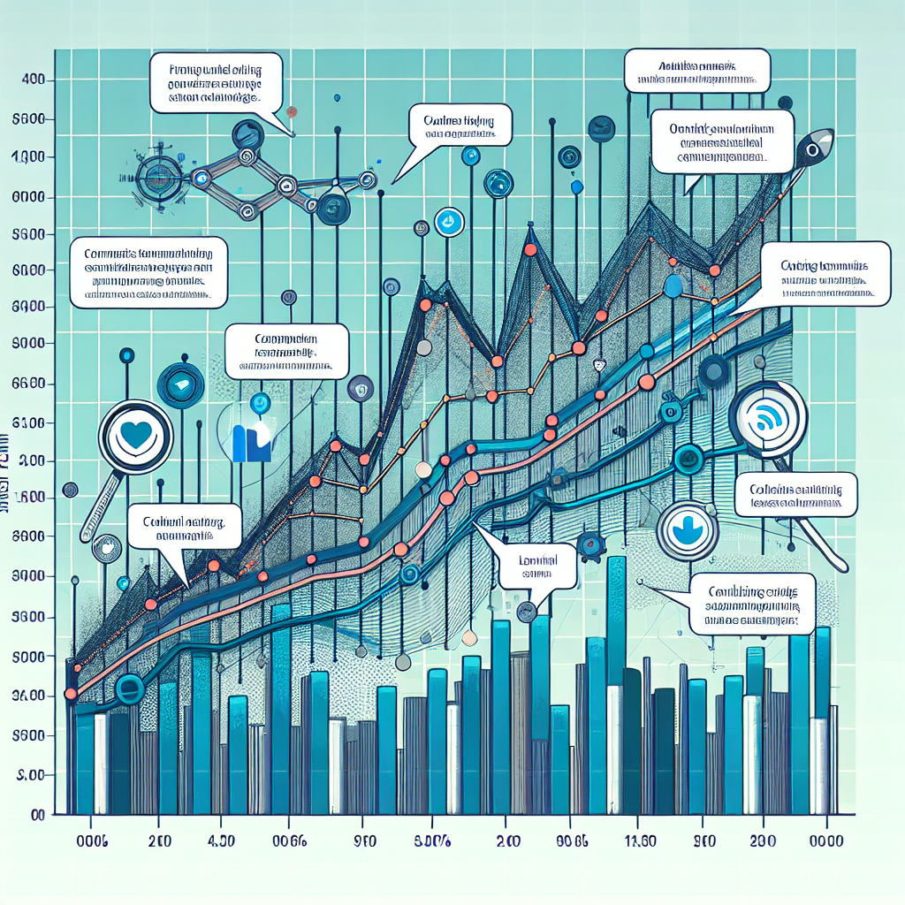

Sentiment Analysis for Sales Prediction
This lecture explores the application of sentiment analysis in predicting sales trends. We will cover the basics of sentiment analysis, its importance in sales forecasting, and practical implementation using Python.
Introduction to Sentiment Analysis
| Definition of Sentiment AnalysisImportance in various industriesBasic techniques and tools |
Sentiment Analysis in Sales Prediction
|  | How sentiment affects consumer behaviorCase studies of sentiment analysis in salesBenefits of using sentiment analysis for sales forecasting |
Tools and Techniques
| Overview of popular sentiment analysis toolsIntroduction to Natural Language Processing (NLP)Machine learning models for sentiment analysis |
Implementing Sentiment Analysis in Python
| Setting up the environmentUsing libraries like NLTK and TextBlobBuilding a simple sentiment analysis modelimport nltk
from textblob import TextBlob
# Sample text
text = 'I love this product! It has changed my life.'
# Create a TextBlob object
blob = TextBlob(text)
# Get the sentiment
sentiment = blob.sentiment
print(sentiment)
|
Case Study: Sentiment Analysis for Sales Forecasting
| Overview of the case studyData collection and preprocessingModel training and evaluation |
Challenges and Future Directions
| Common challenges in sentiment analysisEthical considerationsFuture trends and advancements |